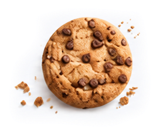

<!DOCTYPE html>
<!--
  Экран: М20 — Уведомление и настройки cookie
  Исходник PSD: 01_исходники/макеты_psd/Уведомление и настройки cookie.psd
  Пункт ТЗ: п.9.5 — cookie-уведомление и согласие
  Этап 1 (вёрстка): статическая адаптивная разметка HTML/CSS/JS на демо-данных.
  «Настроить» на этапе 2 раскрывает категории (необходимые/аналитика/реклама),
  необязательные скрипты не запускаются до согласия (js/cookie.js).
-->
<html lang="ru">
<head>
  <meta charset="UTF-8">
  <!-- До подгонки по высоте страницу не показываем: браузер иначе рисует её
       в 1:1 и через мгновение «прыгает» (замер: отрисовка на 552 мс,
       масштаб на 708 мс). Показ страхуют load и таймер на 4 с — на случай,
       если скрипт не загрузился. Ниже 2550 подгонки нет. -->
  <style>@media (min-width:2550px){html{visibility:hidden}}</style>
  <script>(function(){window.__wcFit=0;function r(){if(!window.__wcFit)document.documentElement.style.visibility="visible"}addEventListener("load",r);setTimeout(r,4000)})();</script>
  <noscript><style>@media (min-width:2550px){html{visibility:visible!important}}</style></noscript>
  <link rel="preload" as="script" href="../js/fit-height.js">
  <script src="../js/zoom-mode.js"></script>
  <meta name="viewport" content="width=device-width, initial-scale=1.0">
  <title>Файлы cookie — Weiss Color</title>
  <meta name="theme-color" content="#ffffff">
  <link rel="preload" as="font" type="font/woff2" href="../assets/fonts/montserrat-cyrillic-500-normal.woff2" crossorigin>
  <link rel="stylesheet" href="../css/reset.css">
  <link rel="stylesheet" href="../css/variables.css">
  <link rel="stylesheet" href="../css/base.css">
  <link rel="stylesheet" href="../css/layout.css">
  <link rel="stylesheet" href="../css/components.css">
  <link rel="stylesheet" href="../css/responsive.css">
  <link rel="stylesheet" href="../css/modals.css">
</head>
<body>
  <main class="cookie-demo">
    <aside class="cookie-bar" id="cookie-bar" role="region" aria-labelledby="cookie-title">
      

      <div>
        <h1 class="cookie-bar__title" id="cookie-title">Мы используем cookie</h1>
        <p class="cookie-bar__text">
          Файлы cookie помогают нам делать сайт удобнее для вас:
          запоминать настройки, показывать актуальные предложения и анализировать посещаемость.
        </p>
        <a class="cookie-bar__link" href="legal.html">
          <span class="cookie-bar__label">Подробнее в Политике конфиденциальности</span>
          <svg viewBox="0 0 26 16" fill="none" stroke="currentColor" stroke-width="1.4" aria-hidden="true">
            <path d="M1 8h23M18 2l6 6-6 6" stroke-linecap="round" stroke-linejoin="round"/>
          </svg>
        </a>
      </div>

      <div class="cookie-bar__actions">
        <button class="btn btn--brown" type="button" data-cookie="accept">Принять все</button>
        <button class="btn btn--outline" type="button" data-cookie="settings">Настроить</button>
      </div>

      
    </aside>
  </main>

  <script src="../js/main.js"></script>
  <script src="../js/fit-height.js"></script>
</body>
</html>
